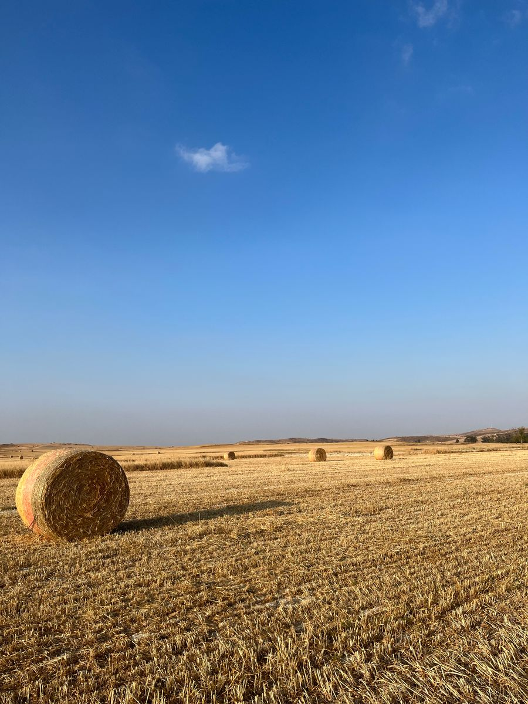
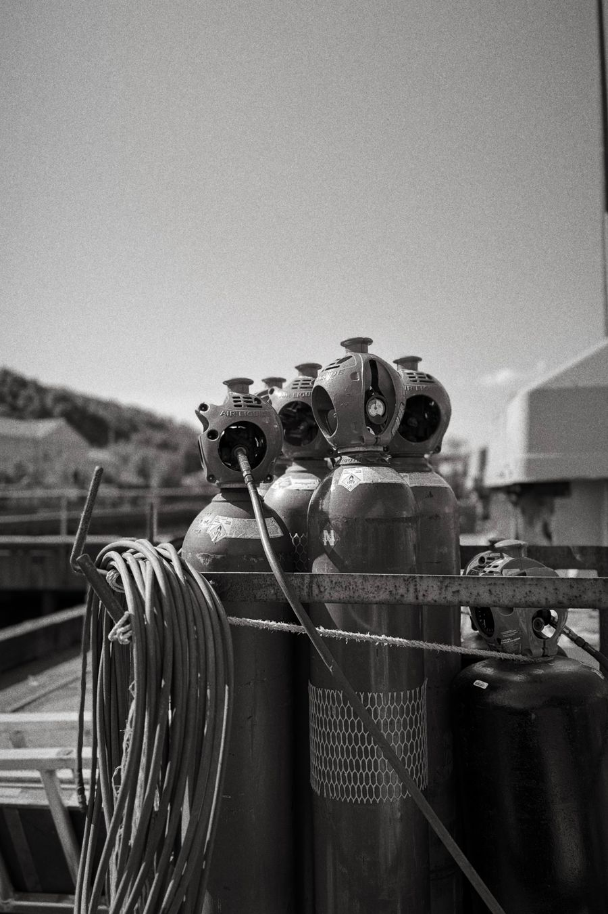
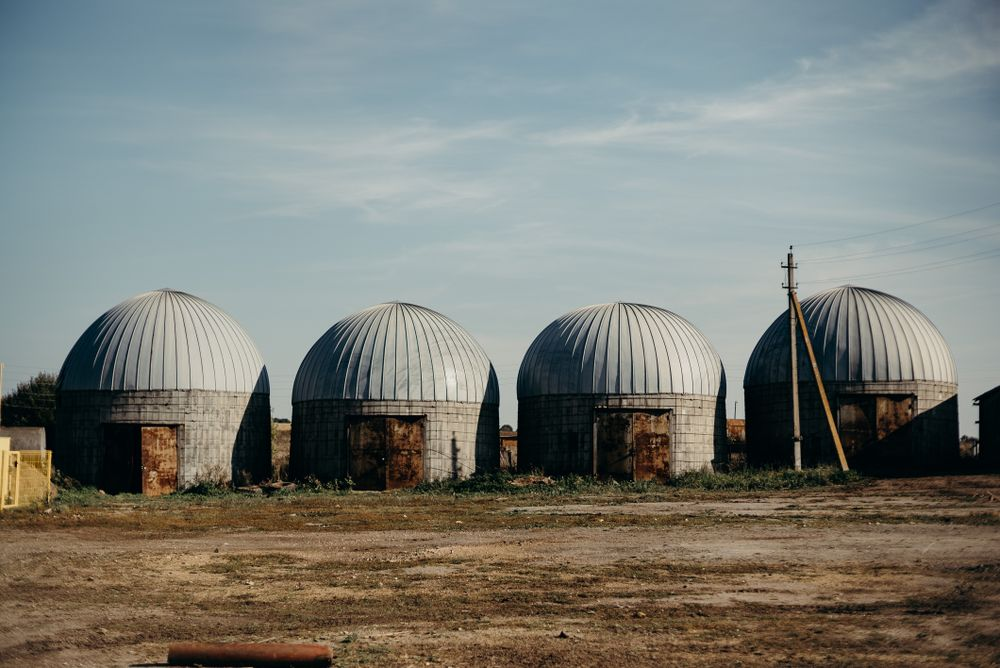

Feedstock
Agricultural residue and organic waste procured under long-term supply agreements.
Procurement & quality control
Bio-CNG at 97% purity. Certified organic fertiliser. One integrated process from feedstock to fuel.
The industrial case
India’s gas demand vs. feedstock opportunity
Agricultural waste can cover more than twice India’s current natural gas consumption
CBG blending in CNG by 2028 — a guaranteed demand of 8 MMT annually.
Bio-CNG per kg vs. diesel at ₹90+/litre — a 40–50% fuel cost advantage.
Indian agricultural soil organic carbon — organic fertiliser restores to the target 1.0%.
Sources: SATAT scheme (MoPNG), Indian Biogas Association, ICAR soil health data, 2024.
Our process

Agricultural residue and organic waste procured under long-term supply agreements.
Procurement & quality control
Anaerobic digestion converts feedstock into raw biogas in sealed reactors.
Controlled anaerobic process
Biogas is upgraded and compressed to pipeline-grade Bio-CNG.
97%+ methane purity

Dual output — clean transport fuel and certified organic fertiliser.
Bio-CNG & fertiliser
0
Tonnes/year processed
Agricultural waste diverted from open burning
0 tonnes/day
Bio-CNG production
Total output capacity at full operation
0 %
Methane purity
Pipeline-grade specification consistently achieved
0 plants
Operational facilities
Expanding across the supply network
Certifications & compliance
SATAT Initiative
Aligned with the Govt. of India's Sustainable Alternative Towards Affordable Transportation scheme.
Reg. no. — available on request
ISO 9001:2015
Certified quality management across plant operations and process control.
Reg. no. — available on request
ISO 14001:2015
Certified environmental management for sustainable, compliant operations.
Reg. no. — available on request
FCO Compliance
Fertiliser (Control) Order compliance for certified organic fertiliser output.
Reg. no. — available on request
Products
Case study
We are documenting a full deployment end to end — partner, volumes, and measured results. This space will carry the first verified Shaw AgriVolt case study once the engagement is published.
To be published Impact metrics — CO₂ displaced, vehicles fuelled, tonnes delivered

Partnerships
Send us a message or reach out directly.